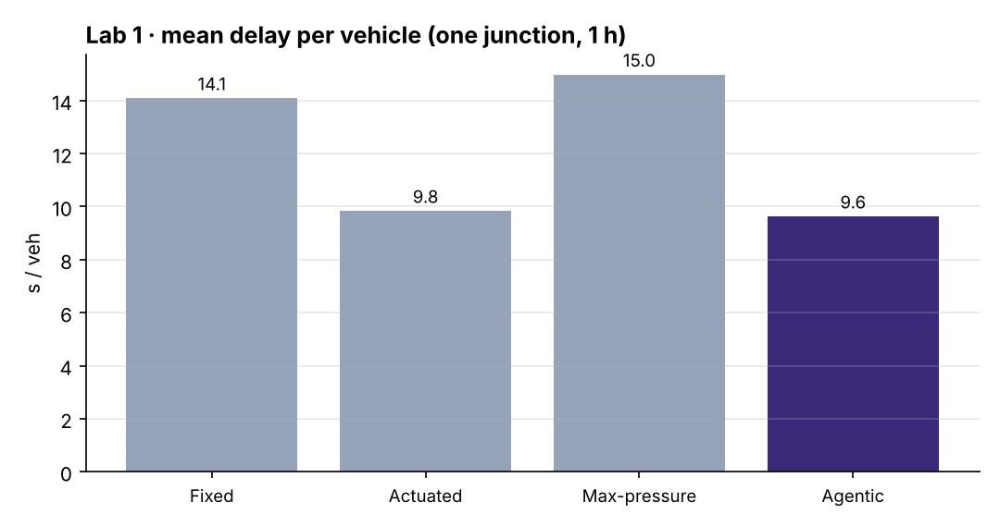
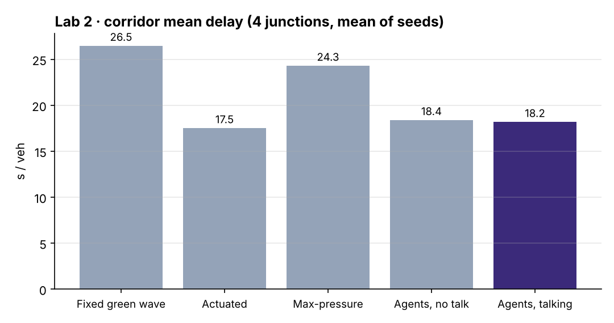
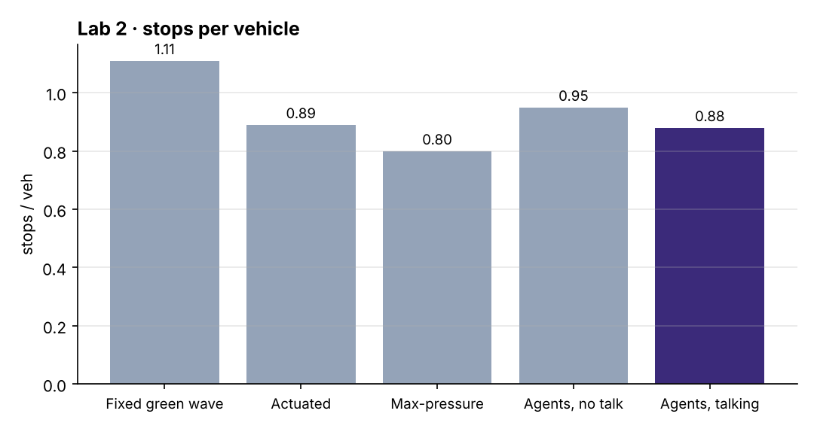
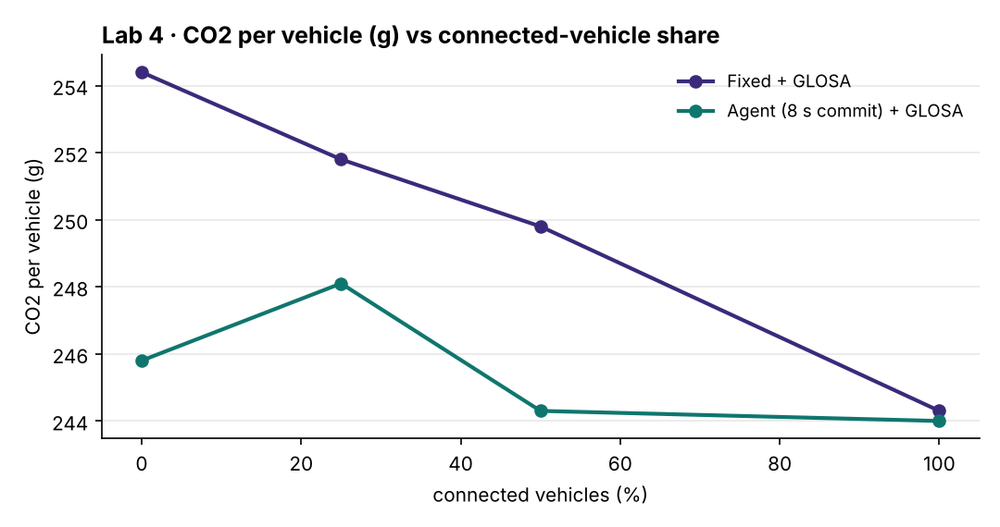
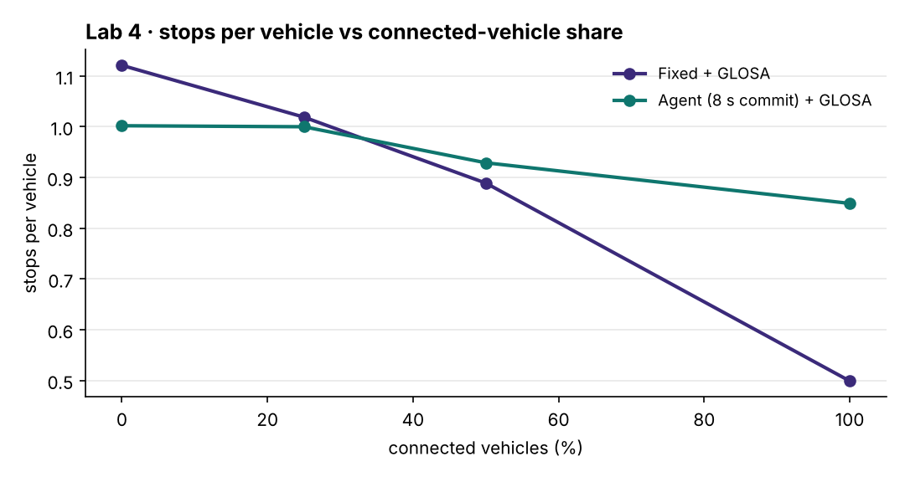
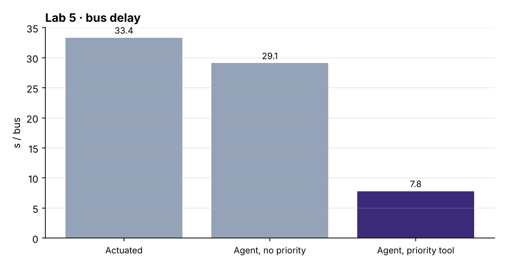
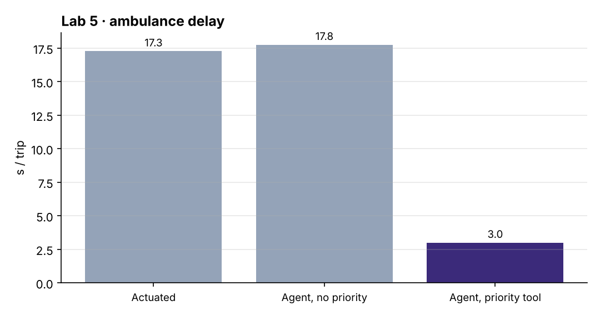

Build signal agents in SUMO, step by step
Six labs, each a short Python script that drives Eclipse SUMO through TraCI. You start with one agent at one junction and finish with talking agents, a learning agent, eco-driving connected vehicles, priority tools and a language-model agent behind a safety shield.
Lecture and study guide
0 · Set up (10 minutes)
git clone https://github.com/smrahmanbd/agentic-atsc-lab.git
cd agentic-atsc-lab/sumopython -m pip install -r requirements.txtpython -m pytest tests -q
python go2/01_first_agent.py --gui # watch in sumo-gui; press the green play buttonHow the code is organised
sumo/agentic_atsc/
network.py builds the test networks (1 junction, or a 4-junction corridor) and Poisson demand
junction.py one signal: two stages (EW, NS), yellow 3 s, all-red 1 s, and the PERCEPTION TOOLS
queue(), max_wait(), approaching(), downstream_occupancy(), pressure(),
priority_requests(), cav_estimate()
controllers.py FixedTime, Actuated, MaxPressure,
AgenticController (perceive → reason → act, goals, memory, messages, shield)
QLearningAgent, LLMAgent (mock or real model, always behind the shield)
cav.py GLOSA eco-driving advice for connected vehicles from SPaT
runner.py runs SUMO, steps the controller every second, returns delay, stops, CO2, waits
go2/ six labs go3/ five research experiments tests/ unit testsJunction.request(stage). Yellow, all-red and minimum green are the same for everyone, so comparisons are fair.Lab 1 · Your first agent: perceive, reason, act
python go2/01_first_agent.pydef step(self, t):
for jid, j in self.J.items():
obs = self.perceive(jid, t) # tools: queues, waits, arrivals, exits, priority, messages
action, why = self.reason(obs) # score(keep) vs score(switch) + plain-language reason
self.act(jid, t, action, why) # SafetyShield.check(...) then Junction.request(...)
def score(self, obs, s): # goals as weights
g = self.goals
sc = g.w_queue*obs[f"queue_{s}"] + g.w_wait*obs[f"wait_{s}"] + g.w_arrive*obs[f"arriving_{s}"]
if obs[f"priority_{s}"]: sc += g.w_priority
if obs[f"spill_{s}"] > 0.6: sc -= g.w_spill * (obs[f"spill_{s}"] - 0.6) / 0.4
return sc| Controller | Mean delay (s) | Longest wait (s) |
|---|---|---|
| Fixed time | 14.1 | 36 |
| Actuated | 9.8 | 26 |
| Max-pressure | 15.0 | 301 |
| Agentic | 9.6 | 20 |
Pure max-pressure starves the side street here (one car waited 301 s and was removed by SUMO): it has no notion of fairness. The agent's fairness weight and its 90 s cap fix that.
Goals(w_wait=0), rerun and compare the longest wait. Then raise hysteresis to 6 and count the switches.Decision inspector
Real decisions from the Lab 1 run, peak hour
Lab 2 · Many agents: coordination on a corridor
python go2/02_multi_agent.py --seeds 3def communicate(self, jid, t):
for d, nb in self.down[jid].items(): # downstream neighbour east and west
for v in vehicles_on_link(jid, nb):
eta = t + remaining_distance(v) / self.vt
...
self.bus.send(Message(t, jid, nb, "platoon", {"eta": eta, "size": n}))w_platoon × size to the EW score when the platoon is due within 12 s, so it holds or starts the green for it.| Controller | Delay (s) | Stops / veh | CO2 (g) |
|---|---|---|---|
| Fixed green wave | 26.5 | 1.11 | 252 |
| Actuated | 17.5 | 0.89 | 229 |
| Max-pressure | 24.3 | 0.80 | 241 |
| Agents, no talk | 18.4 | 0.95 | 232 |
| Agents, talking | 18.2 | 0.88 | 229 |
Talking cuts stops by 7 % and CO2 slightly, but well-tuned actuation still has the lowest delay on this short corridor. That is an honest result: coordination pays more on longer, denser networks, and is the starting point for Go 3.
w_platoon to 1.5, or make the corridor longer in scenarios.py (n=6).

Lab 3 · A learning agent: Q-learning
python go2/03_learning_agent.py --episodes 30r = -(j.queue("EW") + j.queue("NS")) # reward: fewer waiting cars is better
q[prev_action] += alpha * (r + gamma * max(Q[state]) - q[prev_action])
a = random_action() if random() < epsilon else argmax(Q[state])Training curve
Mean delay per training episode (exploration falls from 30 % to 2 %)Lab 4 · Eco-driving: signals talk to connected vehicles
python go2/04_eco_driving.pygreen, remaining = controller.spat(jid, t)
if green == my_stage and arrive_time <= remaining: no advice
elif other stage green and remaining known: t_next = remaining + yellow + all_red
v = max(5 m/s, min(v_max, distance / t_next)) # glide instead of stopAgenticController(commit_horizon=8)).commit_horizon to 0 (no promise) or 16 in the script. Go 3 experiment R5 sweeps it.

Lab 5 · Tools for priority: buses and ambulances
python go2/05_priority.pyJunction.priority_requests(stage) lists buses and emergency vehicles within 200 m. The goal weight w_priority = 25 outweighs any normal queue.| Controller | Bus delay (s) | Ambulance delay (s) | Everyone (s) |
|---|---|---|---|
| Actuated | 33.4 | 17.3 | 17.8 |
| Agent, priority off | 29.1 | 17.8 | 18.2 |
| Agent, priority tool | 7.8 | 3.0 | 18.4 |
Bus delay falls by about three-quarters and ambulances barely stop, at a cost of 0.2 s for everyone else.


Lab 6 · A language-model agent behind a safety shield
python go2/06_llm_agent.py # mock LLM
pip install anthropic; export ANTHROPIC_API_KEY=...
python go2/06_llm_agent.py --backend anthropic --minutes 10hallucination, gives the kinds of bad answers reported for LLM controllers: switching too early, never switching, inventing a stage, or holding all-red.Prompt and shield playground
The same rules as SafetyShield in controllers.pyRecap
- Set up:
pip install -r requirements.txt; all controllers share oneJunctionwith the same safety timings. - Lab 1: the perceive-reason-act loop with goals as weights beats fixed time and matches actuation, with the shortest longest-wait.
- Lab 2: neighbours exchange platoon forecasts; fewer stops, but actuation still wins on delay on a short corridor.
- Lab 3: tabular Q-learning learns, but not yet as well as good rules.
- Lab 4: SPaT + GLOSA turns stops into glides; predictability matters.
- Lab 5: a priority tool cuts bus and ambulance delay sharply for a tiny general cost.
- Lab 6: an LLM agent is only safe behind a shield that checks every answer.
Walk them on the Go 2 memory route.